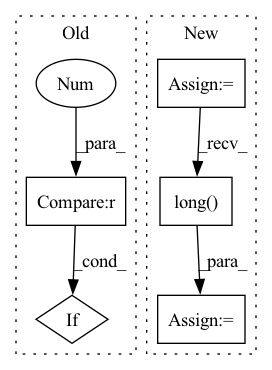

Pattern ID :30059

Before Change
torch.save(model, save)
else:
patience += 1
if early_stop and patience > 7:
break
elif task == "multilabel":
f1_micro = f1_score(true, pred, average="micro")
After Change
loss = criterion(out, j[-1].float().cuda())
else:
if len(j[-1].size())>1:
j[-1] = j[-1].squeeze()
loss=criterion(out, j[-1].long().cuda())
totalloss += loss * len(j[-1])
if task == "classification":
pred.append(torch.argmax(out, 1))
In pattern: SUPERPATTERN
Frequency: 3
Non-data size: 5
Instances
Fragment ID: 89214549
Project Name: pliang279/multibench
Commit Name: 76a20ce2589f8280042a0ff0b97f31bded5c8c0c
Time: 2021-06-01
Author: ztwu_nil@zju.edu.cn
File Name: training_structures/Simple_Early_Fusion.py
M Class Name: AnonimousClass
N Class Name: AnonimousClass
M Method Name: train(16)
N Method Name: train(16)
M Parent Class:
N Parent Class:
M File Name: training_structures/Simple_Early_Fusion.py
N File Name: training_structures/Simple_Early_Fusion.py
M Start Line: 45
M End Line: 159
N Start Line: 42
N End Line: 164
'>
Before Change
torch.save(model, save)
else:
patience += 1
if early_stop and patience > 7:
break
elif task == "regression":
print("Epoch " + str(epoch) + " valid loss: " + str(valloss))
After Change
loss = criterion(out, j[-1].float().cuda())
else:
if len(j[-1].size())>1:
j[-1] = j[-1].squeeze()
loss=criterion(out, j[-1].long().cuda())
totalloss += loss * len(j[-1])
if task == "classification":
pred.append(torch.argmax(out, 1))
'>
Fragment ID: 89214548
Project Name: pliang279/multibench
Commit Name: ad6f250adaddd084749a47bcb9bc54236badc5ea
Time: 2021-06-01
Author: ztwu_nil@zju.edu.cn
File Name: training_structures/Simple_Early_Fusion.py
M Class Name: AnonimousClass
N Class Name: AnonimousClass
M Method Name: train(16)
N Method Name: train(16)
M Parent Class:
N Parent Class:
M File Name: training_structures/Simple_Early_Fusion.py
N File Name: training_structures/Simple_Early_Fusion.py
M Start Line: 45
M End Line: 159
N Start Line: 42
N End Line: 164
'>
Before Change
else:
raise ValueError("kernel: {} is not supported!".format(kernel))
if kernel_size % 2 == 0:
pos_discrete = pos_src.ceil().long()
pos_frac = pos_src - pos_src.floor()
else:
After Change
// The target coordinates do not require gradients
pos = torch.arange(sizes[0] * sizes[1], **dkwargs)
pos_i = (pos // sizes[1]).float()
pos_j = (pos % sizes[1]).float()
// Map the target coordinates to the source coordinates
// This implements the backward warping
pos_tar = torch.stack([pos_j, pos_i, torch.ones_like(pos_i)], dim=0)
pos_src = torch.matmul(m.inverse(), pos_tar)
pos_src = pos_src[:2] / pos_src[-1, :]
// Out of the image
pos_bound = pos_src.new_tensor([x.size(-1), x.size(-2)]) - 0.5
pos_bound.unsqueeze_(-1)
pos_in = torch.logical_and(pos_src.ge(-0.5), pos_src.lt(pos_bound))
pos_in = pos_in.all(0)
// Remove the outside region and compensate subpixel shift
sub = (k % 2) / 2
pos_src = pos_src[..., pos_in]
pos_src_sub = pos_src - sub
pos_discrete = pos_src_sub.ceil().long()
pos_frac = pos_src_sub - pos_src.floor()
pos_frac.unsqueeze_(1)
// (2, 1, HW)
pos_w = torch.linspace(pad - k + 1, pad, k, **dkwargs)
'>
Fragment ID: 89214552
Project Name: thstkdgus35/bicubic_pytorch
Commit Name: eb261bd72c7d717dab243fa09c6be01c8cdce6cb
Time: 2020-07-26
Author: sonsang35@gmail.com
File Name: core_warp.py
M Class Name: AnonimousClass
N Class Name: AnonimousClass
M Method Name: warp_by_size(6)
N Method Name: warp_by_size(6)
M Parent Class:
N Parent Class:
M File Name: core_warp.py
N File Name: core_warp.py
M Start Line: 38
M End Line: 104
N Start Line: 38
N End Line: 92